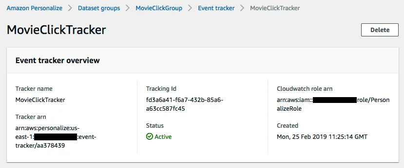

Published: 2019-06-10 | Originally published at AWS Blog
Today, we’re happy to announce that Amazon Personalize is available to all AWS customers. Announced in preview at AWS re:Invent 2018, Amazon Personalize is a fully-managed service that allows you to create private, customized personalization recommendations for your applications, with little to no machine learning experience required.
Whether it is a timely video recommendation inside an application or a personalized notification email delivered just at the right moment, personalized experiences, based on your data, deliver more relevant experiences for customers often with much higher business returns.
The task of developing an efficient recommender system is quite challenging: building, optimizing, and deploying real-time personalization requires specialized expertise in analytics, applied machine learning, software engineering, and systems operations. Few organizations have the knowledge, skills, and experience to overcome these challenges, and simple rule-based systems become brittle and costly to maintain as new products and promotions are introduced, or customer behavior changes.
For over 20 years, Amazon.com has perfected machine learning models that provide personalized buying experiences from product discovery to checkout. With Amazon Personalize, we are bringing developers that same capability to build custom models without having to deal with the complexity of infrastructure and machine learning that typically accompanies these types of solutions.
With Amazon Personalize, you provide the unique signals in your activity data (page views, signups, purchases, and so forth) along with optional customer demographic information (age, location, etc.). You then provide the inventory of the items you want to recommend, such as articles, products, videos, or music as an example. Then, entirely under the covers, Amazon Personalize will process and examine the data, identify what is meaningful, select the right algorithms, and train and optimize a personalization model that is customized for your data, and accessible via an API. All data analyzed by Amazon Personalize is kept private and secure and only used for your customized recommendations. The resulting models are yours and yours alone.
With a single API call, you can make recommendations for your users and personalize the customer experience, driving more engagement, higher conversion, and increased performance on marketing campaigns. Domino’s Pizza, for instance, is using Amazon Personalize to deliver customized communications such as promotional deals through their digital properties. Sony Interactive Entertainment uses Personalize with Amazon SageMaker to automate and accelerate their machine learning development and drive more effective personalization at scale.
Personalize is like having your own Amazon.com machine learning personalization team at your beck and call, 24 hours a day.
Introducing Amazon Personalize
Amazon Personalize can make recommendations based on your historical data stored in Amazon S3, or on streaming data sent in real-time by your applications, or on both.
This gives customers a lot of flexibility to build recommendation solutions. For instance, you could build an initial recommender based on historical data, and retrain it periodically when you’ve accumulated enough live events. Alternatively, if you have no historical data to start from, you could ingest events for a while, and then build your recommender.
Having covered historical data in my previous blog post , I will focus on ingesting live events this time.
The high-level process looks like this:
Creating a dataset group
Let’s say we’d like to capture a click stream of movie recommendations. Using the the first time setup wizard, we create a dataset group to store these events. Here, let’s assume we don’t have any historical data to start with: all events are generated by the click stream, and are ingested using the event ingestion SDK.
Creating a dataset group just requires a name.
Then, we have to create the interaction dataset, which shows how users are interacting with items (liking, clicking, etc.). Of course, we need to define a schema describing the data: here, we’ll simply use the default schema provided by Amazon Personalize.
Optionally, we could now define an import job, in order to add historical data to the data set: as mentioned above, we’ll skip this step as all data will come from the stream.
Configuring the event tracker
The next step is to create the event tracker that will allow us to send streaming events to the dataset group.
After a minute or so, our tracker is ready. Please take note of the tracking id: we’ll need it to send events.

Creating the dataset
When Amazon Personalize creates an event tracker, it automatically creates a new dataset in the dataset group associated with the event tracker. This dataset has a well-defined schema storing the following information:
Real-time events can be sent to this dataset in two different ways:
Let’s look at both options.
Sending real-time events with the AWS SDK
This is a very easy process: we can simply use the PutEvents API to send either a single event, or a list of up to 10 events. Of course, we could use any of the AWS SDKs: since my favourite language is Python, this is how we can send events using the boto3 SDK .
import boto3
personalize_events = boto3.client('personalize-events')
personalize_events.put_events(
trackingId = <TRACKING_ID>,
userId = <USER_ID>,
sessionId = <SESSION_ID>,
eventList = [
{
"eventId": "event1",
"sentAt": 1549959198,
"eventType": "rating",
"properties": """{\"itemId\": \"123\", \"eventValue\": \"4\"}"""
},
{
"eventId": "event2",
"sentAt": 1549959205,
"eventType": "rating",
"properties": """{\"itemId\": \"456\", \"eventValue\": \"2\"}"""
}
]
)In our application, we rated movie 123 as a 4, and movie 456 as a 2. Using the appropriate tracking identifier, we sent two Events to our event tracker:
Here’s a similar code snippet in Java.
List<Event> eventList = new ArrayList<>();
eventList.add(new Event().withProperties(properties).withType(eventType));
PutEventsRequest request = new PutEventsRequest()
.withTrackingId(<TRACKING_ID>)
.withUserId(<USER_ID>)
.withSessionId(<SESSION_ID>)
.withEventList(eventList);
client.putEvents(request)You get the idea!
Sending real-time events with AWS Amplify
AWS Amplify is a JavaScript library that makes it easy to create, configure, and implement scalable mobile and web apps powered by AWS. It’s integrated with the event tracking service in Amazon Personalize.
A couple of setup steps are required before we can send events. For the sake of brevity, please refer to these detailed instructions in the Amazon Personalize documentation:
Once this is taken care of, we can send events to Amazon Personalize. We can still use any text string for event types, but please note that a couple of special types are available:
Here is how to send some sample events with AWS Amplify:
Analytics.record({
eventType: "Identify",
properties: {
"userId": "<USER_ID>"
}
}, "AmazonPersonalize");
Analytics.record({
eventType: "<EVENT_TYPE>",
properties: {
"itemId": "<ITEM_ID>",
"eventValue": "<EVENT_VALUE>"
}
}, "AmazonPersonalize");
Analytics.record({
eventType: "MediaAutoTrack",
properties: {
"itemId": "<ITEM_ID>",
"domElementId": "MEDIA DOM ELEMENT ID"
}
}, "AmazonPersonalize");As you can see, this is pretty simple as well.
Creating a recommendation solution
Now that we know how to ingest events, let’s define how our recommendation solution will be trained.
We first need to select a recipe, which is much more than an algorithm: it also includes predefined feature transformations, initial parameters for the algorithm as well as automatic model tuning. Thus, recipes remove the need to have expertise in personalization. Amazon Personalize comes with several recipes suitable for different use cases.
Still, if you’re new to machine learning, you may wonder which one of these recipes best fits your use case. No worry: as mentioned earlier, Amazon Personalize supports AutoML, a new technique that automatically searches for the most optimal recipe, so let’s enable it. While we’re at it, let’s also ask Amazon Personalize to automatically tune recipe parameters.
All of this is very straightforward in the AWS console: as you’ll probably want to automate from now on, let’s use the AWS CLI instead.
$ aws personalize create-solution \
--name jsimon-movieclick-solution \
--perform-auto-ml --perform-hpo \
--dataset-group-arn $DATASET_GROUP_ARNNow we’re ready to train the solution. No servers to worry about, training takes places on fully-managed infrastructure.
$ aws personalize create-solution-version \
--solution-arn $SOLUTION_ARN
Once training is complete, we can use the solution version to create a recommendation campaign.
Deploying a recommendation campaign
Still no servers to worry about! In fact, campaigns scale automatically according to incoming traffic: we simply need to define the minimum number of transactions per second (TPS) that we want to support.
This number is used to size the initial fleet for hosting the model. It also impacts how much you will be charged for recommendations ($0.20 per TPS-hour). Here, I’m setting that parameter to 10, which means that I will initially be charged $2 per hour. If traffic exceeds 10 TPS, Personalize will scale up, increasing my bill according to the new TPS setting. Once traffic drops, Personalize will scale down, but it won’t go below my minimum TPS setting.
$ aws personalize create-campaign \
--name jsimon-movieclick-campaign \
--min-provisioned-tps 10 \
--solution-version-arn $SOLUTION_VERSION_ARNShould you later need to update the campaign with a new solution version, you can simply use the UpdateCampaign API and pass the ARN of the new solution version.
Once the campaign has been deployed, we can quickly test that it’s able to recommend new movies.
Recommending new items in real-time
I don’t think this could be simpler: just pass the id of the user and receive recommendations.
$ aws personalize-rec get-recommendations \
--campaign-arn $CAMPAIGN_ARN \
--user-id 123 --query "itemList[*].itemId"
["1210", "260", "2571", "110", "296", "1193", ...]At this point, we’re ready to integrate our recommendation model in your application. For example, a web application would have to implement the following steps to display a list of recommended movies:
Amazon Personalize in action
Actually, my colleague Jake Wells has built a web application recommending books . Using an open dataset containing over 19 million book reviews, Jake first used a notebook hosted on Amazon SageMaker to clean and prepare the data. Then, he trained a recommendation model with Amazon Personalize, and wrote a simple web application demonstrating the recommendation process. This is a really cool project, which would definitely be worthy of its own blog post!
Available now!
Whether you work with historical data or event streams, a few simple API calls are all it takes to train and deploy recommendation models. Zero machine learning experience is required, so please visit aws.amazon.com/personalize , give it a try and let us know what you think.
Amazon Personalize is available in the following regions: US East (Ohio), US East (N. Virginia), US West (Oregon), Asia Pacific (Tokyo), Asia Pacific (Singapore), and EU (Ireland)
The service is also part of the
AWS free tier
. For the first two months after sign-up, you will be offered:
1. Data processing and storage: up to 20 GB per month
2. Training: up to 100 training hours per month
3. Prediction: up to 50 TPS-hours of real-time recommendations per month
We’re looking forward to your feedback!
— Julien ;
Julien is the Artificial Intelligence & Machine Learning Evangelist for EMEA . He focuses on helping developers and enterprises bring their ideas to life. In his spare time, he reads the works of JRR Tolkien again and again.
{kind=link}
{kind=link}
{kind=link}